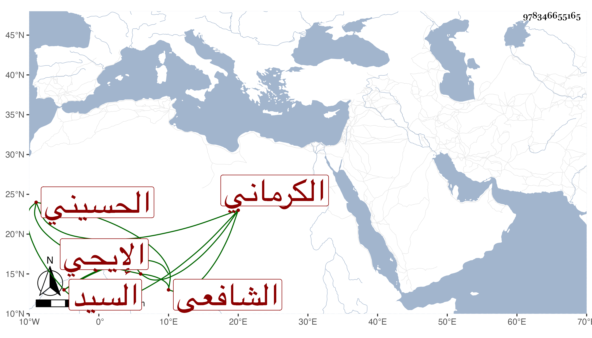

0902Sakhawi.DawLamic.ITO20230111-ara1.EIS1600.978346655165
Biography ID: 978346655165
860
نعمة الله بن عبد الله بن محمد السيد نور الدين بن الشرف بن الشمس الحسيني الإيجي ثم الكرماني الشافعي أحد أصحاب اليافعي . ولد في يوم الاثنين رابع عشر ربيع الأول سنة إحدى وثلاثين وسبعمائة ولقيه الطاووسي فأخذ عنه بعض عقيدة النسفي بل وعرض شيئا مما صنفه وأجاز له وهو ممن صحب العضد واليافعي وأبا الفتح الطاووسي ومباركشاه وغيرهم ، وتسلك وشاخ وأرشد مع مشاركة في العلوم وذكر بكرامات مخدوش فيها بتقريره كلام ابن عربي . ويلقب ي تلك البلاد بالولي . ومات في رجب سنة أربع وثلاثين وقد أسن بحيث قيل أنه جاز المائة وبالغ الطاووسي في الثناء عليه وله عقب ، ترجمه لي بجل ما أبديته السيد نور الدين أحمد بن الصفي عبد الرحمن بن محمد الإيجي وهو ممن أخذ عنه بل تزوج حفيدته خديجة ابنة خليل الآتية وقال إنه كان مرشدا صالحا رحمه الله وعفا عنه .
